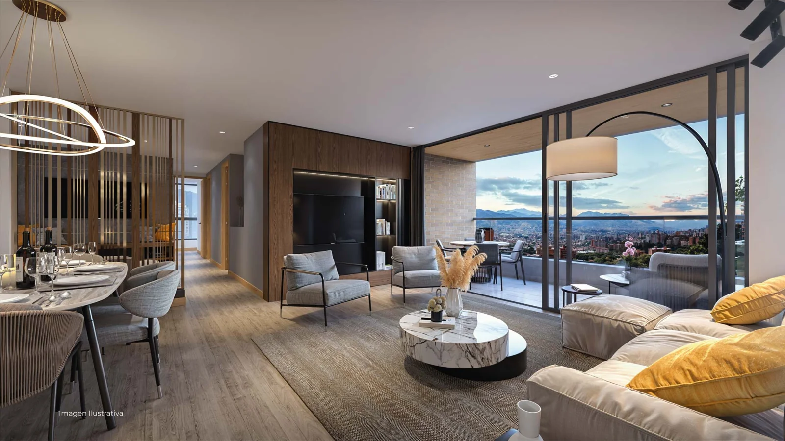

INVERSIÓN MENSUAL ↗
$8,5 MCOP · Google + Meta
UNA ESTRATEGIA CON INTENCIÓN
Un proyecto extraordinario merece llegar a quienes saben valorarlo. Conectamos el deseo de vivir mejor con la decisión de comprar.

Proyección mensual basada en supuestos editables. No representa resultados de campañas en vivo.
DISTRIBUCIÓN MENSUAL
✦ EN PALABRAS SIMPLES Meta presenta Pinot al comprador adecuado; Google captura a quien ya está buscando apartamentos premium.
NUESTRA ESTRELLA NORTE
El éxito es que las personas correctas quieran conocer Pinot. La visita es donde la intención se vuelve oportunidad.
TARGETING INTELLIGENCE · 02/08
Segmentamos por motivación de compra y señales de interés. No inferimos ingresos reales ni prometemos que todos los intereses existan en Meta.
ARQUITECTURA DE PÚBLICOS
Ubicación relevante + mensajes por necesidad. Probar audiencias amplias contra sugerencias de intereses.
Visitas al sitio, interacción y video viewers, respetando consentimiento y ventanas de atribución.
CRM de leads calificados y visitas, con permisos adecuados, para optimizar por resultados valiosos.
Los rangos de edad y las afinidades son hipótesis creativas/estratégicas. Las categorías reales de segmentación deben validarse en Ads Manager; la renta personal no se puede deducir de un interés.
GEO INTELLIGENCE · 03/08
Pinot está en Loma de las Brujas, Envigado. La pauta se expande a micromercados con afinidad premium en el Valle de Aburrá y oriente cercano.
MAPA REAL · OPENSTREETMAP
Marcadores orientativos de centros de sector; no son límites exactos de barrios ni prueban concentración de compradores. Verificar disponibilidad geográfica en plataformas.
PRIORIZACIÓN
Loma de las Brujas es el destino. El Poblado, Envigado consolidado y Las Palmas son las áreas de prospección prioritarias; no confundir demanda potencial con población comprobada.
Explorar Pinot ↗MEDIA ARCHITECTURE · 04/08
Google captura demanda activa; Meta construye deseo, interés y retorno. Cada campaña tiene un trabajo específico.
EL RECORRIDO IDEAL
SEARCH INTELLIGENCE · 05/08
Investigación cualitativa para campañas Search. Keywords reales propuestas para validar con Keyword Planner: sin volúmenes ni CPC inventados.
EXPLORADOR DE KEYWORDS
| PALABRA CLAVE PROPUESTA | TIPO DE INTENCIÓN | PRIORIDAD | MATCH SUGERIDO |
|---|
Volumen, competencia y CPC deben consultarse en Google Keyword Planner bajo ubicación, periodo e idioma definidos. No se reportan como observados.
EXCLUSIONES INICIALES
Revisar términos de búsqueda antes de excluir de forma amplia. Una palabra negativa mal aplicada puede eliminar búsquedas útiles.
INSIGHT SEARCH
“Apartamentos nuevos Loma de las Brujas” puede indicar más cercanía al producto que “apartamentos Medellín”. La hipótesis debe medirse por visitas y oportunidades, no solo clics.
CREATIVE DIRECTION · 06/08
Tres territorios creativos inspirados en los renders y atributos del proyecto. Son conceptos, no anuncios publicados.
Para: Familias consolidadas y ejecutivos. Mostrar ambientes, calma, amenities, zona y la experiencia de llegar.
Para: hogares en evolución. Secuencia de sala, área social, coworking, piscina y opciones de 87 a 164 m² aprox.
Para: compradores patrimoniales. Resaltar ubicación, tipologías, condiciones de cuota inicial y agendamiento sin prometer rentabilidad.
PLAYBOOK · FORMATO × MENSAJE
Abrir con un render auténtico, vista o detalle. No iniciar con un catálogo de texto.
Ubicación, exclusividad, amenities o amplitud. Evitar prometer atributos no documentados.
Mostrar «Desde» actualizado cuando se confirme inventario; pedir presupuesto y tiempo de compra.
A/B entre estilo de vida y características concretas; optimizar por cita y SQL, no por CTR aislado.
MEDIA FORECAST · 07/08
Modifica presupuesto, CPL y participación de Google. Todo se recalcula sin simular datos históricos inexistentes.
ESCENARIO DE INVERSIÓN
Una hipótesis financiera simple, no una promesa de rendimiento.
REPARTO POR CLÚSTER · MODELO DE ASIGNACIÓN
Distribución 35% / 30% / 20% / 15% basada en hipótesis de priorización; no en tamaños auditados ni en reach real. Los números de leads se redondean preservando el total.
CONVERSION QUALITY · 08/08
La métrica que importa no termina en el formulario. Diseñamos un sistema para distinguir curiosidad, intención y oportunidad comercial.
Formulario o conversación recibida.
Meta: costo por leadInterés, ubicación, presupuesto y timing consistentes.
Meta: % leads contactablesAsesor verifica perfil y viabilidad de negocio.
Meta: costo por SQLCita comercial efectivamente realizada.
Meta: costo por visitaDecisión de compra registrada y atribuible.
Meta: costo por separaciónPREGUNTAS DEL FORMULARIO
MÍNIMO DE INSTRUMENTACIÓN
✓ UTMs con plataforma, campaña y clúster
✓ Conversiones mejoradas / consentimiento
✓ Eventos: lead, MQL, SQL, cita y visita
✓ CRM conectado a Google y Meta cuando sea viable
✓ Tablero semanal de calidad, no solo CPL